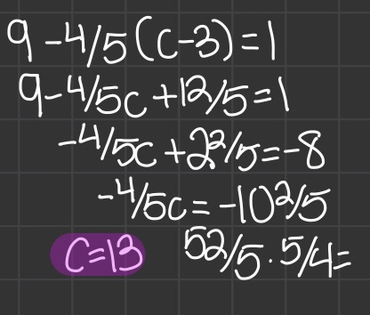
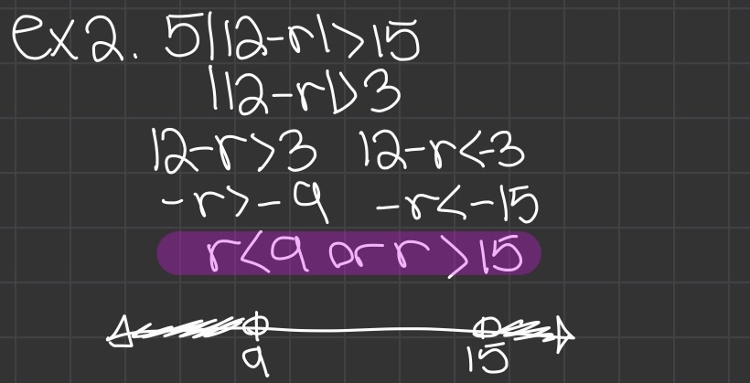
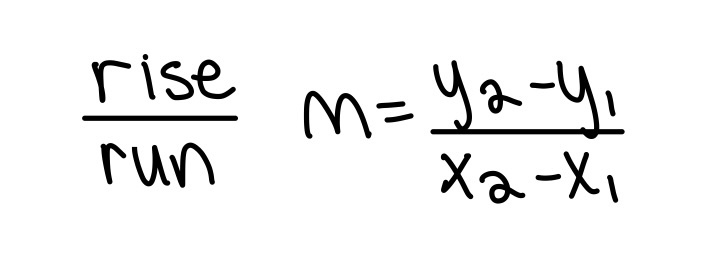

Algebra 1 is the fundamental for every other math course! Having a solid understanding of Algebra 1 will improve your understanding of other math courses significantly
Solving Multistep Equations

Distribute if necessary
Add/subtract/multiply/divide on both sides so that there is only one of each variable.
Isolate the variable
Solving Multistep Absolute Value Equations
Case of an extraneous solution
|x| = -x, x; |x| ≥ 0
To solve for the other answer, isolate the absolute value sign and make the other side negative
Always check for extraneous solutions: solutions that do not satisfy the equation
Rewriting Literal Equations and Formulas
Literal Equation: an equation with two or more variables
Set the equation to one variable
Consecutive Integers
Consecutive Odd Integers: 3, 5, 7, 9
Consecutive Odd Integers: 2, 6, 8, 10
Consecutive Integer Formulas
Area and Perimeter
Perimeter: length of the outline of a shape to find the perimeter of a rectangle or any polycom. Add the lengths of each side [2(length + width)]
The area is the amount of pace in a polygon (length · width)
If the sides have variables, don't worry. For perimeter, add all the sides like usual and set it equal to a given perimeter to find the variable. For area, multiply length times width and set it equal to the area to find the variable.
Rate · time = distance (D = rt)
Liquid Mixture Problems
OS = old solution
_ = added solution
NS = new solution
Let x = the added solutions
Amount · acid% = total unit of measurement
Set the old solution equal to the new solution to find x
Writing and Graphing Inequalities
Dividing by a negative number on both sides makes the inequality flip
A mathematical sentence that compares expressions
Solving x for an inequality is like solving for x in an equation with one difference: when dividing by a negative number, the sign must flip
Inequalities
Open and Closed Holes/Circle
An open hole/circle represents greater/less than (> <)
An closed hole/circle represents greater/less than or equal to (≥≤)
Compound inequalities
And
The value of x is in between two values. x has to satisfy BOTH inequalities
Ex. -2 < x < 3
Or
The value of x is NOT in between two values. x has to satisfy EITHER inequality.
Ex. x > 0 or x ≤ -2. x can't be -1 since it is not greater than 0 or less than -2.
Solving Absolute Value Inequalities
"and" example

"or" example
Solve the inequality for the variable
Solve the inequality again, but this time flip the sign and make one side negative
Find out if the inequality is an "and" or "or" compound inequality
If a variable is less than the SMALLEST number and greater than the LARGEST number, it is an "or" compound inequality
If a variable is less than the LARGEST number and greater than the SMALLEST number, it is an "and" compount inequality
Functions
The top example is not a function because there is one input for multiple outputs (does not pass the vertical line test)
A function always has one input and one output only
Relation: pairs inputs with outputs
Represented by ordered pairs or mapping diagram
Function: relation that pairs each input with exactly one output. An input having two outputs is not a function (does not pass the verticle line test)
Vertical line test: tests if a graph is a function. Draw a vertical line directly through the graph. If it touches more than two points on a graph, it's not a function.
Domain = input = x
range = output = y
Linear Functions
Linear function: non vertical line, constant rate of change, represented with two variables (y = mx + b)
Non linear function: exactly how it sounds. Not a line
Discrete domain: input values of certain numbers
Continuous: input values consist of all numbers in a line
Horizonal and Vertical Lines
y = # is a horizontal line. y will have the same value no matter the x
x = # is a vertical line. x will have the same value. This line is undefined
Function Notation
f(x) = y
Pronounced f of x
f = function
f(x) represents the output of f corresponding to the input of x. Fancy way of saying that there is a y value for every x value.
Graphing Linear Equations in Standard Form
A, B, and C are real numbers; A and B are not 0
Used to find the x and y-intercepts of a graph
Plug 0 into x to find the y-intercept
Plug 0 into y to find the x-intercept
Can convert into slope-intercept form
Graphing Linear Equations in Slope-Intercept Form
m = slope
slope: rate of change; measures the steepness of a line

Find the slope using either these two formulas
(x1, y1) (x2, y2)
b = y-intercept
Transformations of Linear Equations
Translations (vertical and horizontal changes of a graph)
Reflections in the x and y axis
Vertical/horizontal shrink/stretch
h = horizontal shift. If h is positive (x - h) then the graph shifts to the right. If h is negative (x + h) then the graph shifts to the left
k = vertical shift. A negative k value means the graph shifts downwards. A positive k value means the graph shifts upwards
a = stretch/shrink
g(x) = f(ax): If a > 1 = shrink towards y axis. If 0 < a < 1 = stretch away from the y axis
g(x) = a · f(x): If a > 1 = stretch; becomes steep. If 0 < a < 1 = shrink; becomes shallow
-f(x): the graph reflects across the x axis
f(-x): the graph reflects across the y axis
Writing Equations in Slope/Point-slope Form Parallele and Perpendicular Lines
Can write if given the slope and y-intercept
Find at least two points on a line to graph
Can convert to standard form
The same as Slope-Intercept Form
Use a point (x, y) and the slope to find the slope-intercept form of the slope
Parallel & Perpendicular Lines
Parallel lines
Both slopes have the same slope (m). Only difference is the y-intercept
Ex. y = 2/3x + 1 and y = 2/3x + 4
How to Find the Parallel Line
Create a new slope-intercept equation. Use the variable "b" to replace the y-intercept. This is what will be solved for later
Plug in the given ordered pair and the slope into the equation
Solve for the b value to get the parallel line that passes through a given point
Perpendicular lines
Both slopes have an opposite value and reciprocal of each other
Ex. y = 2/3x + 1 and y = -3/2x - 7
How to Find the Perpendicular Line
Find the reciprocal and negative value of the given slope
Create a new slope-intercept equation. Use the variable "b" to replace the y-intercept. This is what will be solved for later
Plug in the given ordered pair and the new slope into the equation
Solve for the b value to get the perpendicular line that passes through a given point
Arithmetic Sequences
Finds the nth term of a sequence. Has LINEAR nth term rules (addition/subtraction).
d = common difference (pattern in the sequence). Ex. add 6 for each term
an = nth term of the sequence
a1 = first term of the sequence
The bottom formula is the same as point slope form
Solving System of Linear Equations
Graphing
The intersection of the linear equations is the answer to the system
Parallel lines = no intersection = no solution
Lines overlap = are the same linear equation = infinitely many solutions
Substitution
Substitute one equation into the other's x or y respectively
Best used when equations in standard form are given
Elimination
Eliminate one variable to solve for the other by adding or subtracting
Best used when you can eliminate a variable by multiplying one equation with a whole number. Better yet, no multiplication is needed.
Graphing Linear Inequalities
It's messy sorry :(. The peach color represents where the shades intersect
Graph of an inequality on a coordinate plane
Graph like you would a normal linear function
y > x = shade above the line
y < x = shade below the line
Where the shading overlaps = shared values of graphs
Properities of exponents
Product of powers: 23· 22 = 25 = 32
Power of a power: (23)2
Power of a product: (2xy)3 = 8x3y3
Negative exponent: (2/5)-2 = 25/4. If the numerator has a negative exponent, it becomes the denominator. It is the opposite if the denominator has the negative exponent.
Zero exponent: (20000)0 = 1
Quotient of powers: x5/x2 = x3
Power of a quotient: (x / y) 2
Polynomials
Monomial: a number, variable, or product of both with a non negative exponent (ex. 10, b, 10b, 4ab2)
Binomial: two monomials being added or subtracted (ex. 2x - 3y)
Trinomial: three monomials being added or subtracted (ex. 2x - 3y + 4z)
Polynomial: xy2 + x2y + y2-z2
Rational/radical exponents
Example of an exponent as a fraction
Rational number: a number that can be written as a fraction
The denominator of a radical exponent is what the root will be (ex. x1/2= √x
The numerator of a radical exponent is what the number will be raised to the power of (ex. x3/2= (√x)3
Exponential graph
Has a horizontal asymptote: the line graph gets close but never crosses it
Focal point: first integer point closest to HA
a: distance between focal point and horizontal asymptote (+ = focal point is above HA, - = focal point is below HA)
Growth and decay
(1-r) = decay factor
(1+r) = growth factor
Growth: occurs when a quantity is raised by the same factor over equal intervals of time
Decay: occurs when a quantitiy decreases by the same factor
Compound Interest
For n compoundings per year
P = principal/initial value for investment
r = annual interest rate
t = years
n = number of compoundings per year
Solving Exponential Equations
Graphing: this is too tedious please don't graph
Create equal bases: make the base of each side the same to solve
Once the bases are the same, set the exponents equal to each other and solve for x
Equations that are impossible to make the same base are no solution
Geometric Sequences
Multiplying sequences
Finds the nth term of a sequence. Has EXPONENTIAL nth term rules (addition/subtraction).
r = common difference (pattern in the sequence). Ex. add 6 for each term
Explicit formula
Recursive Rule
Example of a recursive rule
Finding the term of a sequence
Describes how each term is related to the preceeding term
Given the first term and the recursive rule, find x amount of terms in the sequence
Given a sequence, find the pattern and write it with a recursive rule
Standard Form of Polynomials
Alphabetical order
Exponents decrease from left to right
Adding and Subtracting Polynomials
Polynomial degree: the sum of the exponents of the variables in the monomial (largest sum). Ex. 8x3y3 = degree 6
Adding horizontal or vertical is based on preference
FOIL (big word you have probably heard before)
Box method/punnett square-looking method
It is exactly like the distributive property, so don't be nervous ;D
First, outer, inner, last
Box method: it's like a punnett square if you have ever done that
Area and Perimeter
A few notes:
a2 + 2ab + b2 = (a + b)2
a2 - 2ab + b2 = (a - b)2
(a + b)(a - b) = a2 - b2
(a + b)2 IS NOT a2 + b2
Basics of Factoring
You can take out the greatest common factor out of a polynomial expression and place it outside of a paranthesis like a distributive property
Sometimes, factoring can be used to rewrite an equation
If an equation is equal to 0, the each equation in parenthesis is also set to 0. This can be used to solve for variables
X Box Method for Factoring
Put "a · c " at the top of the X and "b" at the bottom of the X
Find two numbers that multiply to "a" AND add up to "b"
One they are found, make two binomials like this: (ax2 + 1st number)(2nd number + c)
Take out a common factor for each binomial.
If the binomial in the parantheses are the same, which they should be, put the factors into their own binomial in parantheses.
Vertical Motion
S = initial height
v = velocity
t = time
Graphing Quadratics
Quadratic form/standard form: ax2 + bx + c
Vertex form: f(x) = a(x - h)2 + k
x intercept form: a(x-p)(x-a)
Vertex in quadratic form: (-b/2a), f(-b/(2a))
Vertex in vertex form: (h, k) (when k = y and h = x)
Vertex in x intercept form: V((p+q)/2, f((p+q)/2))
Parabola terms
Minimum: the lowest y value of a positive parabola
Maximum: the highest y value of a negative parabola
Axis of symmetry: the x value of the vertex (where the parabola mirrors each side)
Graphing in quadratic/standard form
Find the vertex using the vertex in quadratic form formula
Plug in x values around the vertex and solve for the y values. Those will be ordered pairs on the graph
Graphing in Vertex Form
Vertex form: f(x) = a(x - h)2 + k
h = horizontal shift. If h is positive (x - h) then the graph shifts to the right. If h is negative (x + h) then the graph shifts to the left
k = vertical shift. A negative k value means the graph shifts downwards. A positive k value means the graph shifts upwards
a = stretch/shrink
-f(x): the graph reflects across the x axis
f(-x): the graph reflects across the y axis
Graphing in X Intercept Form
Set the equation to 0
Solve for the x values. These x values are the x intercepts for the parabola
Plot the x intercepts on the graph
The middle x value between the x intercepts is the x value for the intercept
Plug in the middle x value into the equation to get the y value of the vertex
Plot the vertex and connect the dots :D
Simplifying Radical Expressions
Check to see if the radicand can be split up to a multiplication expression that can be taken the root of (ex. 4, 9, 16, etc. can be square rooted)
If it can, take the root of that first and bring it to the outside of the radical expression.
If there is a variable to the power of something, split it up to a multiplication expression that has a power that can be take the root of (ex. a4 can be square rooted to a2
Rationalizing the Denominator
Until you get to higher levels of math, if there is a radical expression in the denominator, you should rationalize it
Multiply the fraction by the denominator over the denominator (ex. √3/√3). This works because you are technically multiplying by 1
Simplify the rest using the techniques in "Simplifying Radical Expressions
Rationalizing the Denominator with a Binomial Radical Expression
To rationalize a denominator like √3 + 2, multiply by the denominator over the denominator BUT CHANGE THE SIGN (√3 - 2)
This makes the denominator into a rational number. Remember this still works because √3 - 2/√3 - 2 = 1
Operations with Radicals
Important: the radicand must be the same in order to add or subtract
This is similar to how the denominator must be the same to add or subtract
Put it all together!
Remember that PEMDAS still applies
Don't be scared of bigger equations with addition, subtraction, multiplication, division, etc. Use what you have learned
Solving Quadratics Using Square Roots/powers
You can take the square root of both sides similar to how you would divide by both sides to find the value of x
You can also take the power of both sides to cancel out a root
Completing the Square
If factoring is too difficult, completing the square may be more efficent
Subtract the constant from both sides
Divide the middle coefficient by 2 then square it. This will be the new constant for the quadratic equation
Remember to add the new constant to BOTH SIDES
Turn the quadratic equation into a perfect square binomial
Take the square of both sides
DONT FORGET THE +/-
Solve for x
Quadratic Formula
Used to find the zeros of the binomials
When a trinomial isn't factorable, use the quadratic formula to get the exact answers
Discriminant
b2 - 4ac
Tells how many x intercepts the graph has
A positive value means there are two x intercepts
A negative value means there are 0 x intercepts (no solution)
A value of 0 means there is only one x intercept (the vertex)
Recap. Different Ways to Solve Quadratics
Piecewise functions
A function that has multiple graphs in it with domain restrictions
Graph each function regularly without domain restrictions, then erase the areas that exceed them